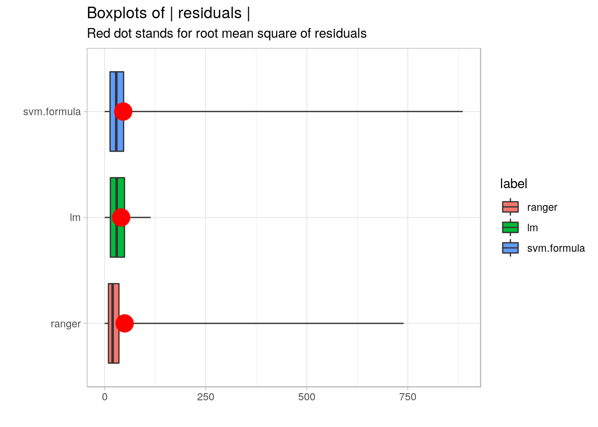
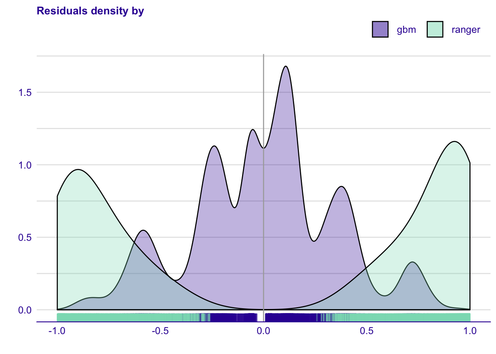
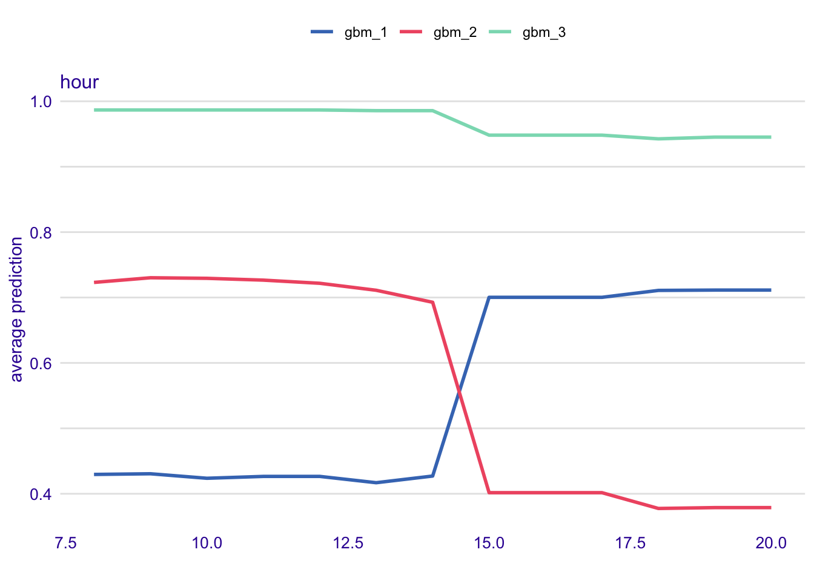
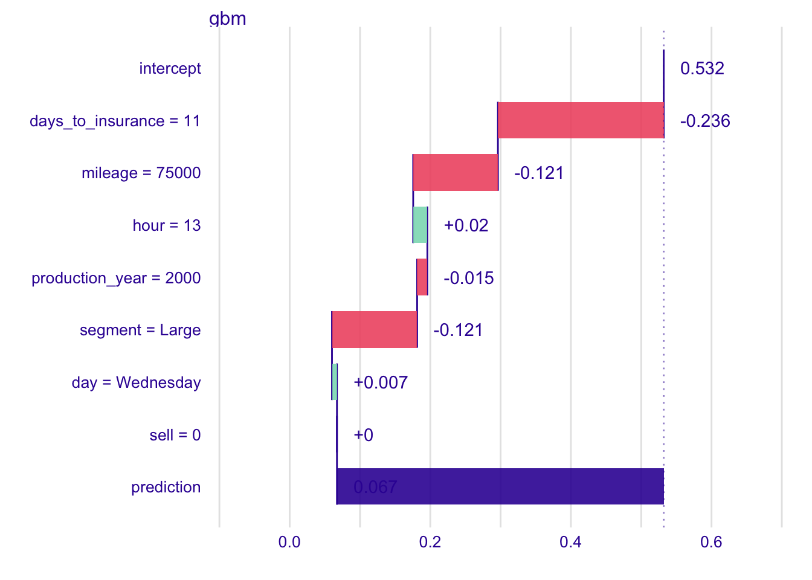

Chapter 24 Use Case: Call Center
In previous chapters we introduced a number of methods for exploration of predictive models. In each chapter we show how to use a particular method for models created on titanic or apartments datasets. These examples we introduced and discussed separately as each of them was focused on a single method described in a given chapter.
In this chapter we present an example of full circle for model development along the process introduces in chapter 2. We use here a single new dataset. Based on it we tour through the process of data preparation, model assembly and model understanding. In each phase we show how to combine results from different methods of exploration. Data used in this example is artificial, but the problem and dependencies in the data are based on a real world use case.
The main goal of this chapter is to show how different techniques complement each other. Some phases, like data preparation, are simplified in order to leave space for the method for visual exploration and explanation of predictive models.
24.1 Introduction
The story is following. We have a company (code name EasyOC), that is selling online car-insurance policies. The company has also a small call center, which is used in order to call selected customers and sell them the insurance by phone. Capabilities of the call center are limited by the number of people that can give a limited number of calls. Thus the EasyOC company wants to know whom to call in order to increase chances for selling insurance policies.
This is exactly our task. To build a model that will predict which customers have highest odds for buying policies. They will be called first.
The model will be created in two iterations. First will be focused on crisp modelling to get the number of candidate models. Second will be focused on fine fining and selection of the best model.
24.2 Iteration 1: Crisp modeling
Goals for the first iteration are:
- better understand data to avoid ,,Garbage In, Garbage Out’’ flaws,
- train few benchmark models to quickly access how good are baseline solutions,
- explore trained models in order to be better prepared for the next iteration.
24.2.1 Data preparation
In this use case we assume that data is already collected in the desired format. We got data in a tabular form with 7 columns and 10000 rows.
Data come from an experiment in which 10000 clients were selected and to each of them we have a call. The column sell summarises the effect of the call if it is successful or not, columns day, hour and days_to_insurance describe conditions for the call, columns production_year, segment and mileage describe conditions of the car and also they tell something about the owner.
## day hour production_year segment mileage days_to_insurance sell
## 1 Wednesday 13 2013 Large 75331 11 0
## 2 Thursday 10 2015 Executive 52368 30 0
## 3 Saturday 20 2012 Mini 96522 14 0
## 4 Wednesday 10 2015 Executive 58371 1 1
## 5 Monday 15 2016 Mini 30719 6 1
## 6 Thursday 8 2014 Executive 66977 19 024.2.2 Data exploration
HERE: ADD PAIRWISE ANALYSIS FOR EACH VARIABLE
Figure 24.1: (fig:callcenterSegment) Response rate by hour in the Call Center data.
Figure 24.2: (fig:callcenterSegment) Response rate by ‘days to insurance’ in the Call Center data.
Figure 24.3: (fig:callcenterSegment) Response rate by segment in the Call Center data.
24.2.3 Model assembly
HERE: Introduce some approaches to modeling
cc_glm <- glm(sell~., data = call_center, family = "binomial")
library("gbm")
cc_gbm <- gbm(sell~., data = call_center, distribution = "bernoulli",
interaction.depth = 3)
library("ranger")
cc_ranger <- ranger(sell~., data = call_center, classification = TRUE, probability = TRUE)
library("DALEX")
cc_glm_exp <- explain(cc_glm, data = call_center,
y = call_center$sell,
colorize = FALSE)## Preparation of a new explainer is initiated
## -> model label : lm ( default )
## -> data : 10000 rows 7 cols
## -> target variable : 10000 values
## -> data : A column identical to the target variable `y` has been found in the `data`. ( WARNING )
## -> data : It is highly recommended to pass `data` without the target variable column
## -> predict function : yhat.glm will be used ( default )
## -> predicted values : numerical, min = 0.01891976 , mean = 0.5326 , max = 0.9223075
## -> residual function : difference between y and yhat ( default )
## -> residuals : numerical, min = -0.8796371 , mean = -3.64491e-13 , max = 0.9784902
## -> model_info : package stats , ver. 3.6.1 , task regression ( default )
## A new explainer has been created!## Preparation of a new explainer is initiated
## -> model label : gbm ( default )
## -> data : 10000 rows 7 cols
## -> target variable : 10000 values
## -> data : A column identical to the target variable `y` has been found in the `data`. ( WARNING )
## -> data : It is highly recommended to pass `data` without the target variable column
## -> predict function : yhat.gbm will be used ( default )
## -> predicted values : numerical, min = 0.03135114 , mean = 0.5320228 , max = 0.990599
## -> residual function : difference between y and yhat ( default )
## -> residuals : numerical, min = -0.9556962 , mean = 0.0005771515 , max = 0.950436
## -> model_info : package gbm , ver. 2.1.5 , task classification ( default )
## A new explainer has been created!cc_ranger_exp <- explain(cc_ranger, data = call_center,
y = call_center$sell,
predict_function = function(m,x)
predict(m, x)$predictions[,1],
colorize = FALSE)## Preparation of a new explainer is initiated
## -> model label : ranger ( default )
## -> data : 10000 rows 7 cols
## -> target variable : 10000 values
## -> data : A column identical to the target variable `y` has been found in the `data`. ( WARNING )
## -> data : It is highly recommended to pass `data` without the target variable column
## -> predict function : function(m, x) predict(m, x)$predictions[, 1]
## -> predicted values : numerical, min = 0 , mean = 0.4673974 , max = 0.9993035
## -> residual function : difference between y and yhat ( default )
## -> residuals : numerical, min = -0.9993035 , mean = 0.06520261 , max = 1
## -> model_info : package ranger , ver. 0.11.2 , task classification ( default )
## A new explainer has been created!24.2.4 Model understanding
library("auditor")
mr_glm <- model_evaluation(cc_glm_exp)
mr_gbm <- model_evaluation(cc_gbm_exp)
mr_ranger <- model_evaluation(cc_ranger_exp)
model_performance(cc_glm_exp, score = c("auc", "f1"))## Model label: lm
## score name
## auc 0.7665343 auc
## f1 0.7225864 f1## Model label: gbm
## score name
## auc 0.9152082 auc
## f1 0.8418023 f1## Model label: ranger
## score name
## auc 0.01147623 auc
## f1 0.06348253 f1
library("ingredients")
fi_gbm <- feature_importance(cc_gbm_exp, loss_function = DALEX::loss_one_minus_auc)
fi_ranger <- feature_importance(cc_ranger_exp, loss_function = DALEX::loss_one_minus_auc)
plot(fi_gbm, fi_ranger) + ylab("1 - AUC")
pd_gbm <- partial_dependency(cc_gbm_exp)
pd_ranger <- partial_dependency(cc_ranger_exp)
plot(pd_gbm, pd_ranger)
24.3 Iteration 2: Fine tuning
In the first iteration we have created three predictive models. It looks like best results are obtained with the ranger model. In this iteration we will tune this model and perform some validation of the model before it will be used in the production.
24.3.1 Analysis of residuals
cc_mr_gbm <- model_residual(cc_gbm_exp)
cc_mr_ranger <- model_residual(cc_ranger_exp)
plot_residual_density(cc_mr_gbm, cc_mr_ranger)


24.3.2 Sensitivity analysis
Ceteris Paribus
call_center_25 <- select_sample(call_center, 25)
cp_cc_gbm <- ceteris_paribus(cc_gbm_exp,new_observation = call_center_25)
plot(cp_cc_gbm)

24.3.3 Deeper analysis of individual observations
library("iBreakDown")
mark <- call_center[1,]
bd_cc_gbm <- break_down(cc_gbm_exp, new_observation = mark)
plot(bd_cc_gbm)